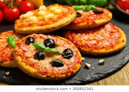

PIZZA HOUSE
Pizza Lovers
Welcome to Pizza House get your favorite
Pizza house makes pizzas of different kind with different size using different ingredients to make our pizzas more delicious . you can choose the toppings you want to have in your pizza and choose the size you want .We have the pizzas in small size ,medium size and large. All size has different crust and toppings , choices is yours
Types of pizza crust
New York

Thin, typically made with high gluten flour. Baked at 450-550F. The Jersey style is "upside down". Cheese first, then sauce.
Cast Iron

This style of pizza Made in a cast iron pan.The pan is greased with lard or butter and the edges of the crust tend to get crispy .
Sicilian

A thick pizza baked in a square or rectangle-shaped pan. Cut into square pieces.
Romana

Large thin crust pizzas originating in Rome made with a high protein flour. Usually at least meter one long in length
Types of pizza
Small sizes
Medium size

Large size